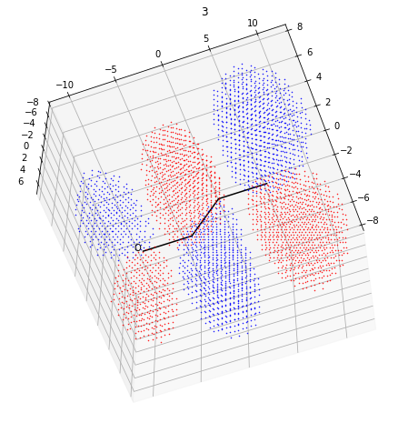
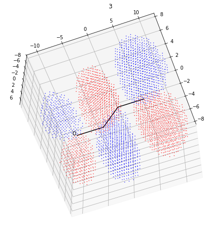

Prop-2-enal
Prop-2-enal#
Prop-2-enal (common name acrolein), the next molecule I chose to investigate, can undergo nucleophilic addition at two sites. The first is entirely expected, the electrophilic (electron deficient) carbonyl carbon is attacked due to the δ+ charge. Each curly arrow represents the movement of a pair of electrons.
{kind=link}
However, addition at the 1 position is unexpected. Alkenes in isolation behave as nucleophiles as they have high electron density, and it is surprising that carbon atom 1 is attacked by a nucleophile. Again, we can look to conjugation to explain this reaction.
{kind=link}
So far, only hydrocarbon conjugated compounds have been considered. In order to introduce heteroatoms into Hückel calculations, two changes must be made. So far, all Coulomb integrals have been set equal to α, as every carbon atom in the system has the same intrinsic ability to attract an electron. However, every heteroatom will have a different nuclear charge and shielding from inner electrons and a different ability to attract electrons1. Typically, the Coulomb integral of a given heteroatom is represented as α + hβ, where h varies depending on the heteroatom and β, as before, is a constant that represents a certain value of energy. In these hydrocarbon systems, every resonance integral was given the same value β, as each C-C sigma bond was considered the same. The value of the resonance integral depends partly on internuclear distance2. As internuclear distance decreases, orbital overlap increases and bonding increases. Hence, in systems involving heteroatoms, the resonance (or bond) integral is scaled with a value k, where k = 1 for C-C bonds.
{kind=link}
Using the established parameters for Coulomb and resonance integrals, we can set up the following matrix for prop-2-enal:
Using the same code as before, we find the following energies and coefficients:
#Program to output Hückel coefficients
import numpy as np
import numpy.linalg
atoms = 4
matrix = [[0,1,0,0],[1,0,1,0],[0,1,0,1],[0,0,1,0.8]]
matrix = np.matrix(matrix)
energy, eigvec = numpy.linalg.eig(matrix)
eigvec = eigvec.tolist()
coefficient = [0] * atoms
for x in range (atoms):
coefficient[x] = [0] * atoms
for i in range (0,atoms):
for j in range (0,atoms):
coefficient[i][j] = eigvec[j][i]
coefficient = np.matrix(coefficient)
print('Energies:', energy)
print('Coefficients:', coefficient)
Energies: [-1.54341698 -0.38708774 0.92924829 1.80125643]
Coefficients: [[-0.42106498 0.64987884 -0.58196906 0.24834208]
[-0.64745313 0.25062117 0.55044075 -0.46369003]
[-0.57759514 -0.53672929 0.07884036 0.60999157]
[ 0.26437204 0.47620183 0.59338958 0.59264496]]
The following molecular orbitals are defined3:
Adding this information to the python program returns the following four plots:
# Prop-2-enal - 90% Plot
import numpy as np
import matplotlib.pyplot as plt
import mpl_toolkits.mplot3d.axes3d as axes3d
from scipy.special import sph_harm
import math
%matplotlib inline
n = 1
l = 0
m = 0
Z = 1
# Constants
na = 6.02*np.power(10, 23)
h = 6.63/np.power(10, 34)
c = 3*np.power(10, 8)
# Value of beta in jmol-1
beta_si = 230000
# Value of beta per molecule
beta = beta_si/na
# Radial distribution function
def radial_distribution(r, n, l, Z_eff):
rho = 2.0 * Z_eff * r / n
p = Z*r
if n == 1 and l == 0 :
return 2*(Z**1.5)*np.exp(-p)
elif n == 2 and l == 0 :
return ((Z/2)**1.5)*(2-p)*np.exp(-p/2)
elif n == 2 and l == 1:
return (1/(np.sqrt(3))*((Z/2)**1.5)*p*np.exp(-p/2))
elif n == 3 and l == 0 :
return (2/27)*((Z/3)**1.5)*(27-18*p+2*(p**2))*np.exp(-p/3)
elif n == 3 and l == 1 :
return (1/27)*((2*Z/3)**1.5)*p*(6-p)*np.exp(-p/3)
elif n == 3 and l == 2 :
return (4/(27*np.sqrt(10)))*((Z/3)**1.5)*(p**2)*np.exp(-p/3)
def spherical_harmonics (theta, phi, l, m):
if l == 0 :
if m == 0 :
# l = 0, m = 0
return np.sqrt ( 1.0 / ( 4 * np.pi))
elif l == 1 :
if m == 0 :
# l = 1, m = 0
return np.sqrt ( 3.0 / ( 4.0 * np.pi)) * np.cos ( theta)
if m == 1 :
# l = 1, m = + 1
return np.sqrt (3.0 / ( 4.0 * np.pi)) * np.sin (theta) * np.cos (phi)
if m ==- 1 :
# l = 1, m = + 1
return np.sqrt ( 3.0 / ( 4.0 * np.pi)) * np.sin (theta) * np.sin (phi)
else:
if m == 0 :
return np.sqrt ( 5.0 / ( 16.0 * np.pi)) * ( 3.0 * (np.cos (theta) ** 2 ) -1.0 )
if m == 1 :
return np.sqrt ( 15.0 )/ ( 4.0 * np.pi) * np.cos (theta) * np.sin (theta) * np.cos (phi)
if m ==- 1 :
return np.sqrt ( 15.0 / ( 4.0 * np.pi )) * np.cos (theta) * np.sin (theta) * np.sin (phi)
if m == 2 :
return np.sqrt ( 15.0 / ( 16.0 * np.pi)) * (np.sin ( theta) ** 2 ) * np.cos ( 2 * phi)
if m == --2 :
return np.sqrt ( 15.0 / ( 16.0 * np.pi)) * (np.sin (theta) ** 2) * np.sin ( 2 * phi)
def f(x, y, z, n, l, m, Z_eff):
#Convert cartesian coordinate system to polar
r = np.sqrt (x * x + y * y + z * z)
Z = 6-( 0.35 * 3 + 0.85 * 2 )
theta = 0.0
phi = 0.0
if r> 0 :
theta = np.arccos (z / r)
if y == 0 :
if x < 0 :
phi = np.pi
elif x * x + y * y> 0 :
phi = np.sign (y) * np.arccos (x / np.sqrt (x * x + y * y))
# Return the wavefunction of the orbital
return (radial_distribution(r, n, l, Z_eff) * spherical_harmonics(theta, phi, l, m))
def propenal(x, y, z, n, l, m, Z_eff):
# Quantum numbers - Hydrogen 1s
n = 2
l = 1
m = 1
# Effective nuclear charges for each atom (calculated using Slater's Laws for Effective Nuclear Charge)
Zc = 6-( 0.35 * 3 + 0.85 * 2 )
Zo = 4.55
total = 0
# Distance between atoms
d_1 = (147.0 / 52.9)*2
d_2 = (134.0 / 52.9)*2
c = [[0.2296, 0.4294, 0.57733, 0.6590],
[-0.578, -0.537, 0.079, 0.610],
[-0.647, 0.251, 0.550, -0.4264],
[ -0.421 , 0.650 , -0.582 , 0.248 ]
]
centre = [[(-d_1/4)-(d_2), d_1*np.sqrt(3)/4], [-d_1/4, d_1*np.sqrt(3)/4], [d_1/4, d_1*-np.sqrt(3)/4], [d_2+(d_1/4), d_1*-np.sqrt(3)/4]]
for i in range (4):
if i <=2:
total = total + c[orbital][i]*f(x, y+centre[i][0], z+centre[i][1], n, l, m, Zc)
else:
total = total + c[orbital][i]*f(x, y+centre[i][0], z+centre[i][1], n, l, m, Zo)
return total
for orbital in range (4):
# Lists for positive data
x_pos_list = []
y_pos_list = []
z_pos_list = []
# Lists for negative data
x_neg_list = []
y_neg_list = []
z_neg_list = []
data = []
N = 35
spread = 15
space = 2*spread/N
prob = 0.0
for i in range (N):
for j in range (N):
for k in range (N):
x = i*space-spread
y = j*space-spread
z = k*space-spread
f_1 = propenal(x, y, z, n, l, m, Z)
# Probability distribution function
f_2 = f_1**2
data.append([f_2,x,y,z,f_1])
prob = prob+f_2*space**3
data = sorted(data, key =lambda data: data[0], reverse=True)
total = 0.0
i = 0
while total<0.9*prob:
x = data[i][1]
y = data[i][2]
z = data[i][3]
total = total+(data[i][0])*space**3
if data[i][4] >0:
x_pos_list.append (x)
y_pos_list.append (y)
z_pos_list.append (z)
else:
x_neg_list.append (x)
y_neg_list.append (y)
z_neg_list.append (z)
i = i+1
# Positive values
Xpos = np.array (x_pos_list)
Ypos = np.array (y_pos_list)
Zpos = np.array (z_pos_list)
# Negative values
Xneg = np.array (x_neg_list)
Yneg = np.array (y_neg_list)
Zneg = np.array (z_neg_list)
fig = plt.figure (figsize = ( 8.0 , 8.0 ))
ax = fig.add_subplot ( 1 , 1 , 1 , projection = '3d' )
x_range = spread
ax.set_xlim3d (-x_range, x_range)
ax.set_ylim3d (-x_range, x_range)
ax.set_zlim3d (-x_range, x_range)
# Plotting the sigma framework
d_1 = (147.0 / 52.9)*2
d_2 = (134.0 / 52.9)*2
centre = [[(-d_1/4)-(d_2), d_1*np.sqrt(3)/4], [-d_1/4, d_1*np.sqrt(3)/4], [d_1/4, d_1*-np.sqrt(3)/4], [d_2+(d_1/4), d_1*-np.sqrt(3)/4]]
x = []
y = []
z = []
for i in range(4):
x.append(0)
y.append(-centre[i][0])
z.append(-centre[i][1])
x.append(0)
y.append(centre[0][0])
z.append(centre[0][1])
ax.text(0, centre[0][0]-1, centre[0][1]-0.5, 'O')
ax.plot3D(x, y, z, 'black')
# Finding the max and min values for each axis in order to scale the axes
ymin = min(min(Ypos), min(Yneg))
ymax = max(max(Ypos), max(Yneg))
zmin = min(min(Zpos), min(Zneg))
zmax = max(max(Zpos), max(Zneg))
ax.set_xlim3d (max(max(Xpos), max(Xneg)), min(min(Xpos), min(Xneg)))
ax.set_ylim3d (ymin, ymax)
ax.set_zlim3d (zmin, zmax)
ax.title.set_text("{}".format(orbital+1, 'π'))
# Plot negative values in blue
ax.plot(Xneg, Yneg, Zneg, color = 'b' , marker = "o", markersize=0.5, linestyle = 'None' )
# Plot positive values in red
ax.plot(Xpos, Ypos, Zpos, color = 'r' , marker = "o", markersize=0.5, linestyle = 'None' )
ax.view_init(120, -20)
plt.show()
 

The π system of prop-2-enal contains four electrons: one is contributed by each carbon and oxygen atom. As a result, the lowest energy two molecular orbitals are filled. In a nucleophilic addition reaction, a pair of electrons is contributed into the LUMO4 of the electrophile5. The equation describing the LUMO of prop-2-enal, the 3π orbital, is shown again below:
The largest region, which has greatest probability of finding an electron (as a result of having the greatest coefficient), and therefore most likely site of nucleophilic attack, is in fact carbon 1. Electron density is also donated to the region in between carbons 2 and 3, accounting for the double bond shown in the structure after addition.
1: Yates, K. (1978). Hückel molecular orbital theory. New York: Academic Press.
2: Yates, (1978)
3: \(χ_n\) denotes the 2p orbital of atom \(n\)
4: Lowest unoccupied molecular orbital
5: In this case, the electrophile is prop-2-enal